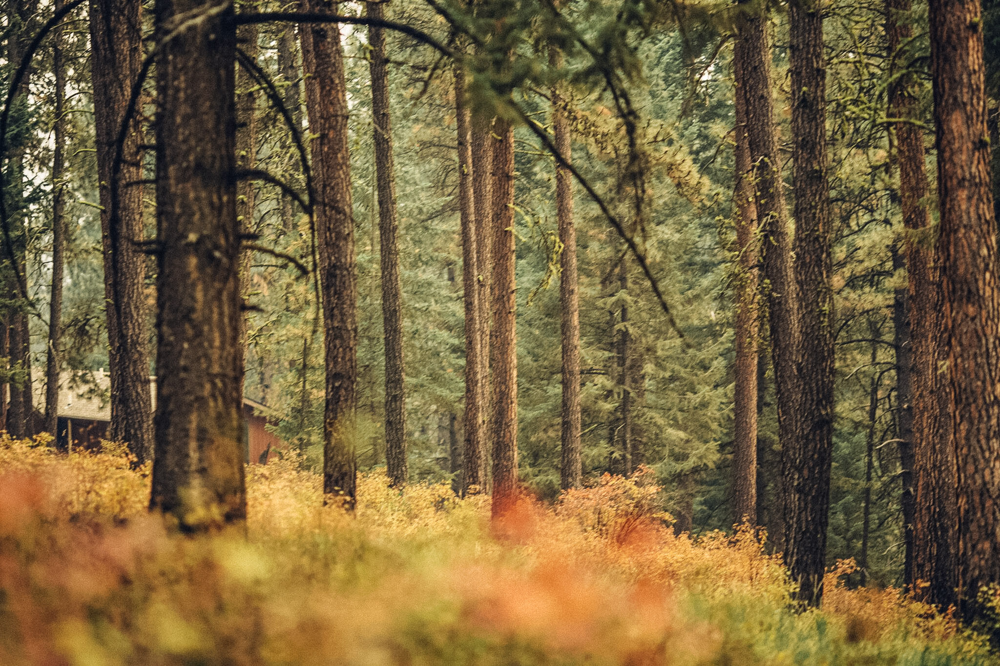

Meet me, Christie, and my 2 pups, Charlie, a 15 (almost 16) year old Red Heeler and Cindy, a 14 (almost 15) year old Beagle. We currently live in Montana but we've moved all over the US. While my dogs are old, we still try to stay as active as wek can. I stared this page as a way to help stick to staying active with them and guiding fellow dog owners and adventurers in their quest to help their dogs lives their best lives.
This is going to be a library full of our adventures starting in 2024. I know I don't have many years left with them and I want to do the best I can to hold on to the memories I make with them. These adventures and trail reports will consist of short hikes, less than 4 miles probably, dog friendly towns, campgrounds, rivers/lakes, etc. While we live in Montana, reports will consist of trips in Montana, Idaho, Wyoming, Washington and beyond!
I'll include how we prepare for trips, our training and what we carry. This is by no means a replacement for professional advice from a veteranarian. I'm simply a girl who is trying to make sure my pups get to spend their last few years living as wild and free as they can.